Leagues

Round-robin: every team meets every other team, and the table at the end is the honest one. Nobody goes home after one bad set, and nobody wins because the draw was kind to them.
TournaQ builds the fixture list, spreads it across your courts, keeps the table up to date as results land, and gives you a crosstable showing every pairing and who beat whom.
Best for
- Club leagues and ladders where fairness matters more than drama
- Small fields with plenty of time — everyone gets a full card of matches
- Events where you want a defensible final ranking, not a knockout
Finding it in the app
Leagues live under Team Competitions in the TournaQ Arena. The hub keeps every league you have run.

The Arena
Every format the app can run, grouped by the kind of session it suits. The number on a card is how many of those you have run.
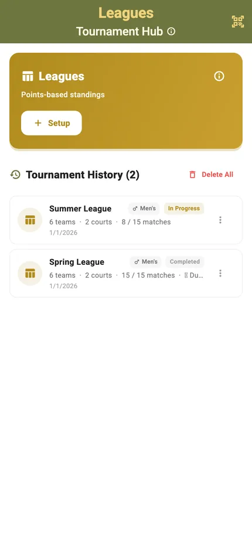
The Leagues hub
New Tournament starts a league. Below it sits your history, each entry showing the date, the team count and how far it got.
Everyone plays everyone
The crosstable is the format in one picture: every team down the side, every team across the top, and the result of each meeting in the cell where they cross.
The crosstable
Read a row to see how one team has done against the whole field, or a column to see who has beaten them. The W-L and points-for columns on the right are what the final ranking is built from — no interpretation needed, just arithmetic everyone can check.
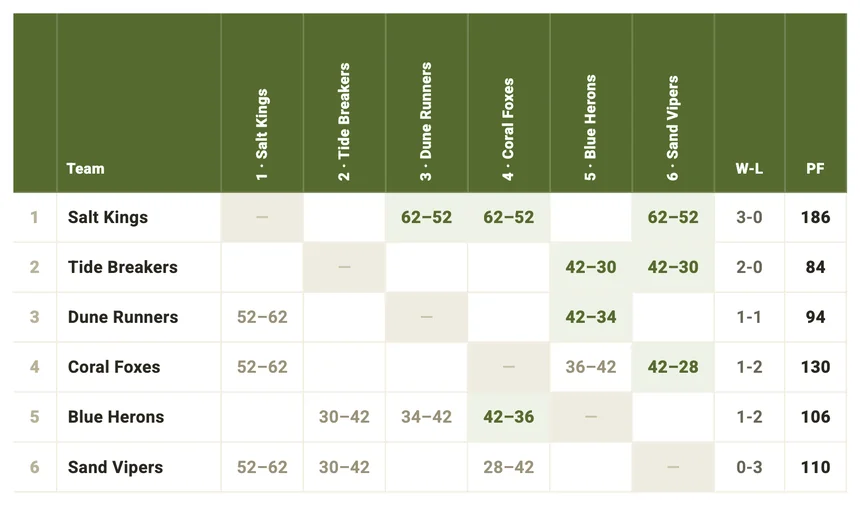
Setting it up
Add the teams, say how many courts you have, and TournaQ generates the full fixture list and tells you when it will finish.
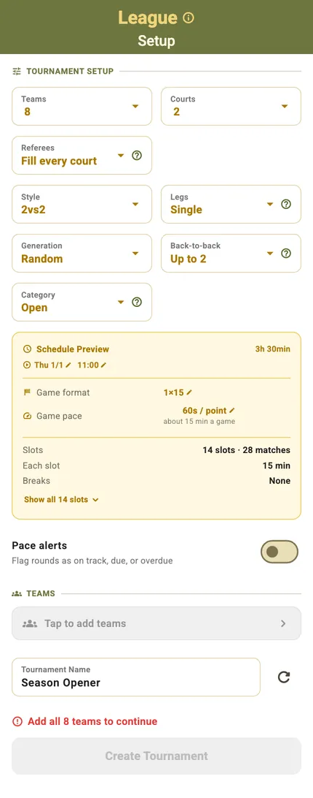
Teams, courts, format
Team count, courts, match format and duration. The Schedule Preview does the arithmetic — a six-team league is fifteen matches, and it will tell you what that costs in time before you commit to it.
Seeding and game format sit behind pills you can still change until play starts.
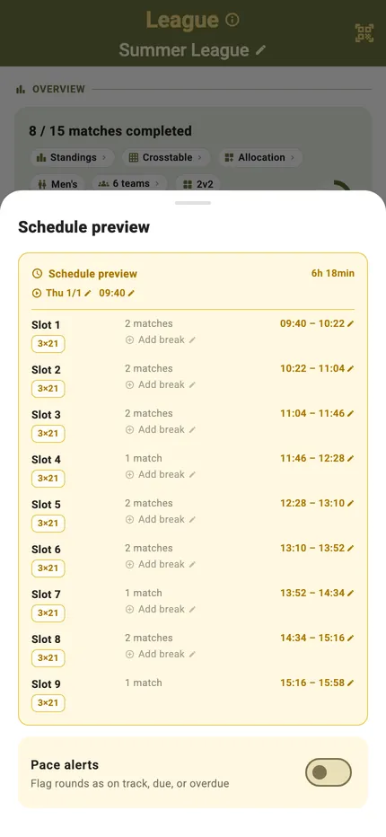
See the schedule before you commit
The preview shows the fixture list the settings would produce, so you can check it fits the evening — and change the courts or the match length if it does not — before anyone has played a point.
Running the league
One screen carries the event: the table as it stands, the fixtures still to play, and which court each of them is on.
The table, live
Standings update as results land, with the progress ring showing how much of the league has been played. Nobody has to add anything up between rounds.
Fixtures by round
Every match grouped by round, with its court, its time slot and its score. Finished rounds collapse and the live one stays open.
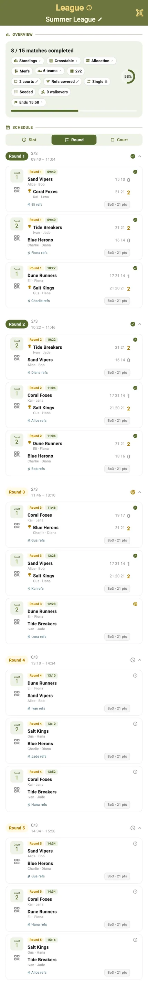
Or by court
The same fixtures regrouped so each court lists its own sequence — the view to hand someone running one court all afternoon.
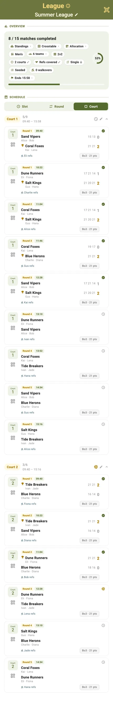
Scoring a match
The same scorecard as everywhere else in TournaQ: big targets, the serving side marked, and undo when the call goes the other way.
Portrait
Tap a side to award the point. The server is highlighted and service passes automatically when the other side scores.
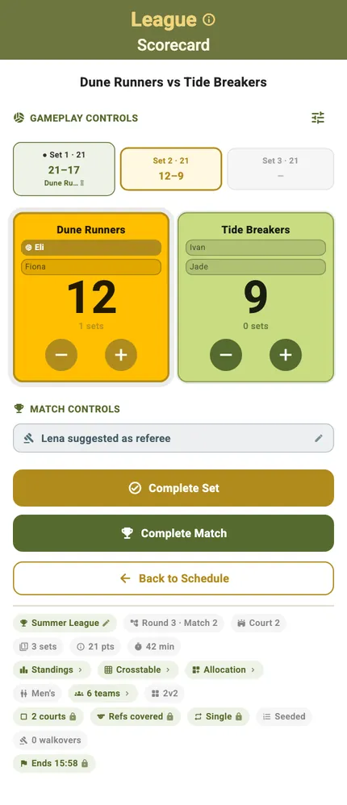
Landscape
Turn the phone and the controls rearrange for a net post or a side table. The layout changes, the functions do not.
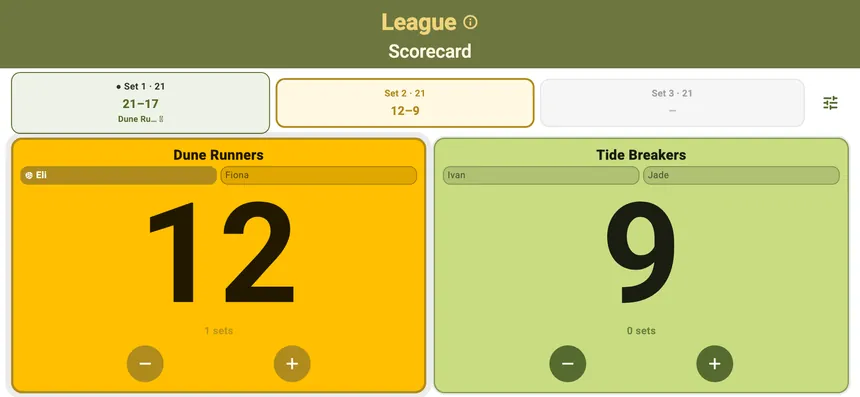
Standings any time
The standings sheet is a tap away from anywhere in the league, so a team can check where they are without interrupting whoever is scoring.
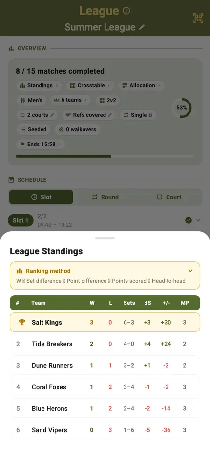
Courts and conditions
A league spread over several courts needs to know which court is which, and who is where.

Who is on which court
The allocation grid lays every round against every court, so you can see the shape of the afternoon and spot a team that has been given the far court four times running.
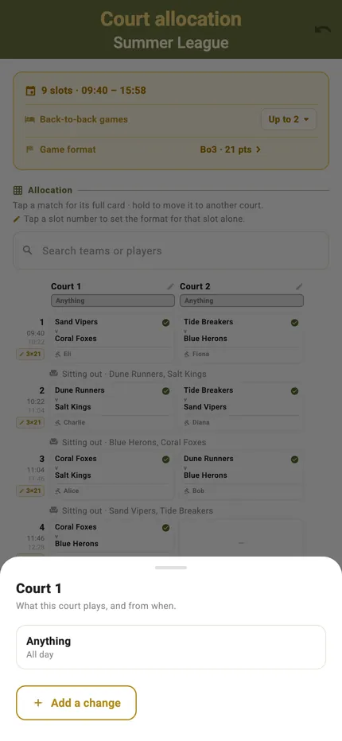
Name and manage the courts
Courts can be named and taken in or out of use, which matters when one has the sun in your eyes or the club needs it back at four.
Finishing the league
When the last fixture is in, the table is the result — every team has played every other, so there is nothing left to argue about.
The completed table
Every fixture played and every result recorded, with the progress ring at a hundred per cent.
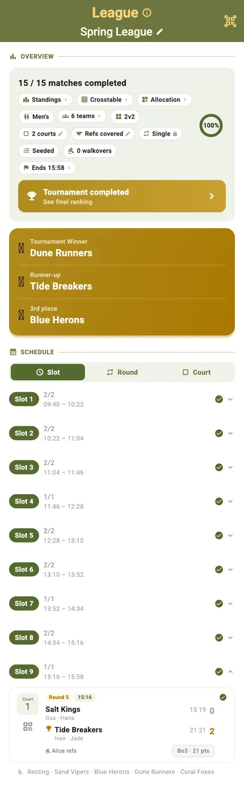
Final standings
The closing table with the winner at the top, ordered by the record everyone could see building all afternoon.
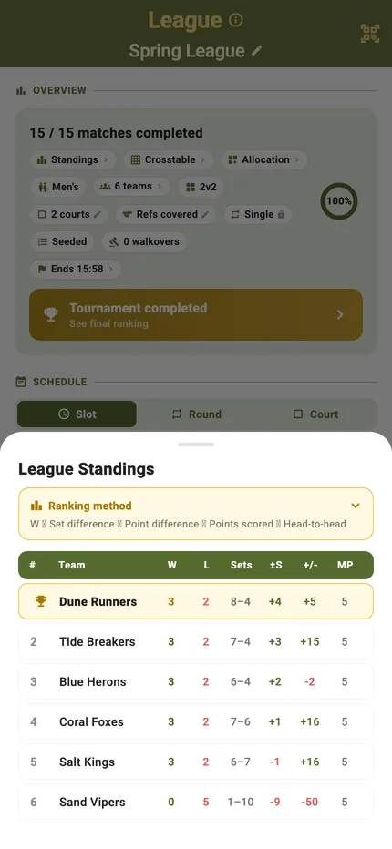
The whole picture
The crosstable at the end is the archive of the event: who played whom, and what happened when they did.
Start to finish
- Open the TournaQ Arena and pick Leagues.
- Tap New Tournament.
- Add the teams and set the courts, match format and duration.
- Check the schedule preview — it shows every fixture the settings will produce.
- Name the league and tap Create Tournament.
- Open the first fixture and score it.
- The table updates itself as each result lands.
- Use the crosstable at any point to see who has beaten whom.
- Play out the fixture list and read the final standings.
Have a question about Leagues, spotted something missing, or want to suggest an improvement?